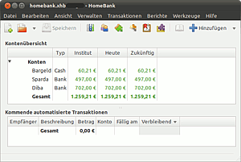
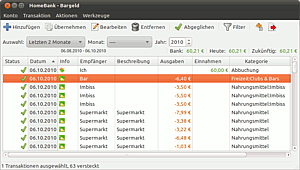
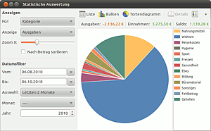

HomeBank
Dieser Artikel wurde für die folgenden Ubuntu-Versionen getestet:
Ubuntu 16.04 Xenial Xerus
Ubuntu 14.04 Trusty Tahr
Zum Verständnis dieses Artikels sind folgende Seiten hilfreich:
HomeBank  ist eine Anwendung zur privaten Finanzverwaltung. Darum verzichtet das Programm auf fortgeschrittene Funktionen wie die doppelte Buchführung und legt dafür Wert auf eine einfache Bedienbarkeit.
ist eine Anwendung zur privaten Finanzverwaltung. Darum verzichtet das Programm auf fortgeschrittene Funktionen wie die doppelte Buchführung und legt dafür Wert auf eine einfache Bedienbarkeit.
HomeBank erlaubt die Verwaltung mehrerer Konten. Buchungen können Empfängern und Kategorien zugeordnet werden. Wiederkehrende Transaktionen lassen sich als Vorlage speichern und auch automatisch ausführen. Der Datenaustausch mit anderen Programmen ist über QIF- und OFX-Dateien möglich. Einnahmen und Ausgaben lassen sich in verschiedenen Berichten auswerten und graphisch darstellen.
Neben der Linux-Version ist das Programm auch für Windows, Mac OS X und FreeBSD verfügbar.

Installation¶
Für das Programm müssen folgende Pakete installiert werden[1]:
homebank (universe)
homebank-data (universe)
 mit apturl
mit apturl
Paketliste zum Kopieren:
sudo apt-get install homebank homebank-data
sudo aptitude install homebank homebank-data
Einrichtung¶
Nach der Installation ist bei Ubuntu-Varianten mit einem Anwendungsmenü ein Programmstarter unter "Anwendungen -> Büro" zu finden[2].
Beim Start von Homebank erscheint zunächst das Hauptfenster. Es dient der Verwaltung grundlegender Informationen, die nach der Installation eingegeben werden sollten, aber auch später bearbeitet und ergänzt werden können. Zu diesen Informationen zählen die zu verwaltenden Konten sowie die Ein- und Ausgabekategorien und Empfänger. Bei den Kategorien ist zu beachten, dass nur zwei Ebenen, also Kategorie → Unterkategorie angelegt werden können.
Bedienung¶
 Ist die Einrichtung des Programms erledigt, gestaltet sich die weitere Benutzung sehr intuitiv. Durch ein Doppelklick auf eines der angelegten Konten öffnet sich das zugehörige Transaktionsfenster, in dem man Zahlungen, Ab- und Umbuchungen "hinzugefügen" kann. Sehr praktisch ist dabei, dass es immer möglich bleibt, frühere Transaktionen im Bedarfsfall zu korrigieren, die Bilanz wird sofort neu errechnet. Die Transaktions-Daten lassen sich als .csv-Datei exportieren.
Für wiederkehrende Transaktionen bietet es sich an, eine Vorlage zu erstellen, um die Tipp-Arbeit beim Hinzufügen zu verringern. Dies geschieht im Hauptfenster über die Symbolleiste oder im Menü "Verwalten -> Vorlagen". Die dort gespeicherten Vorlagen lassen sich im Dialogfenster zum Hinzufügen von Transaktionen über ein Auswahlfeld rechts unten importieren.
Hinweis:
Sämtliche Änderungen an Konten und Transaktionen werden erst gespeichert, wenn man im Hauptfenster auf "speichern" klickt. Dies sollte man also unbedingt vor dem Schließen der Anwendung oder bei längeren Bearbeitungen immer wieder zwischendurch erledigen. Sonst geht man die Gefahr eines Datenverlustes ein!
Statistiken¶
 Sind viele Daten in HomeBank eingetragen worden, so kann es interessant sein, die eigenen finanziellen Gewohnheiten zu analysieren. Dazu besitzt die Anwendung zwei Module, die über das Hauptfenster zu erreichen sind: einen "Trendzeit"-Report und "Statistiken".
Im Modul "Trendzeit" lässt sich der Gesamt-Trend der Konten in einen bestimmten Zeitraum als Tabelle oder Trendlinie darstellen. So können Gewinne bzw. Verluste analysiert werden.
Das Modul "Statistiken" dient zur genaueren Analyse der Einnahmen und Ausgaben. Für welche Kategorien wurde wie viel Geld ausgegeben? An wen ist das meiste Geld geflossen? In welchen Monaten hat man mehr oder weniger eingenommen? Dies sind nur einige Fragen, über die "Statistiken" Auskunft geben kann.
- Erstellt mit Inyoka
-
 2004 – 2017 ubuntuusers.de • Einige Rechte vorbehalten
2004 – 2017 ubuntuusers.de • Einige Rechte vorbehalten
Lizenz • Kontakt • Datenschutz • Impressum • Serverstatus -
Serverhousing gespendet von